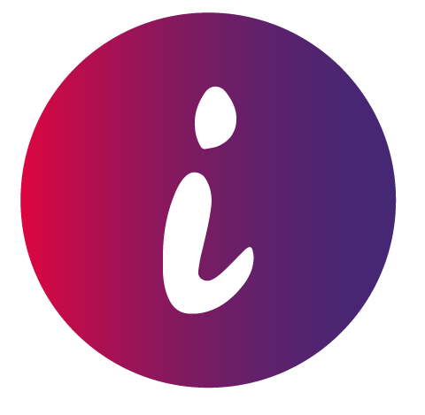

<!-- ============================================================
     BANNER MISIÓN — inntuitivo
     ------------------------------------------------------------
     Dónde pegarlo : en index.html, DESPUÉS de la sección de FAQ
                     y ANTES del <footer>.
     Logo          : copia inntuitivo-logo.png al root del repo
                     (junto a favicon.png y logo-talks.png). Si tu
                     logo circular ya vive en el root con otro
                     nombre, cambia el src y no agregues archivo.
     Autocontenido : estilos incluidos con prefijo .nl- para no
                     chocar con tu CSS. No depende de nada más.
     Umami         : el CTA registra el evento "cta_mision"
                     (mismo estilo que cta_activar).
     ============================================================ -->

<style>
  .nl-banner{
    position:relative;
    background:#452774;
    overflow:hidden;
    padding:56px 24px;
    font-family:'Century Gothic','Jost',sans-serif;
  }
  .nl-banner *{box-sizing:border-box}

  /* hairlines con el gradiente de marca, arriba y abajo */
  .nl-banner::before,
  .nl-banner::after{
    content:"";
    position:absolute;left:0;right:0;height:3px;
    background:linear-gradient(135deg,#DE0540 0%,#452774 100%);
  }
  .nl-banner::before{top:0}
  .nl-banner::after{bottom:0}

  /* nebulosa sutil + estrellas, mismo cielo que el resto del sitio */
  .nl-sky{
    position:absolute;inset:0;pointer-events:none;
    background:
      radial-gradient(ellipse 420px 260px at 85% 15%, rgba(255,110,146,.14), transparent 70%),
      radial-gradient(ellipse 380px 240px at 8% 90%, rgba(222,5,64,.10), transparent 70%);
  }
  .nl-sky i{
    position:absolute;width:2px;height:2px;border-radius:50%;
    background:#F2EDFA;opacity:.35;
    animation:nl-twinkle 3.6s ease-in-out infinite;
  }
  .nl-sky i:nth-child(1){left:12%;top:22%}
  .nl-sky i:nth-child(2){left:26%;top:68%;animation-delay:.6s}
  .nl-sky i:nth-child(3){left:38%;top:16%;width:3px;height:3px;animation-delay:1.2s}
  .nl-sky i:nth-child(4){left:55%;top:78%;animation-delay:1.8s}
  .nl-sky i:nth-child(5){left:68%;top:30%;animation-delay:2.4s}
  .nl-sky i:nth-child(6){left:82%;top:62%;width:3px;height:3px;animation-delay:3s}
  .nl-sky i:nth-child(7){left:91%;top:18%;animation-delay:1.5s}
  @keyframes nl-twinkle{0%,100%{opacity:.2}50%{opacity:.9}}

  .nl-inner{
    position:relative;
    max-width:1040px;margin:0 auto;
    display:flex;align-items:center;gap:32px;
  }

  .nl-logo{
    width:76px;height:auto;flex-shrink:0;
    filter:drop-shadow(0 0 18px rgba(255,110,146,.35));
    animation:nl-float 6s ease-in-out infinite;
  }
  @keyframes nl-float{0%,100%{transform:translateY(0)}50%{transform:translateY(-6px)}}

  .nl-copy{flex:1;min-width:0}
  .nl-eyebrow{
    margin:0 0 10px;
    font-size:.85rem;font-weight:700;
    letter-spacing:.14em;text-transform:uppercase;
    color:#FF6E92;
  }
  .nl-title{
    margin:0 0 10px;
    font-family:'Audiowide','Jost',sans-serif;font-weight:400;
    font-size:clamp(1.25rem,2.6vw,1.75rem);line-height:1.3;
    color:#F2EDFA;
  }
  .nl-sub{
    margin:0;max-width:56ch;
    font-size:1rem;line-height:1.55;
    color:#B5A9D4;
  }

  .nl-cta{
    flex-shrink:0;display:inline-block;
    padding:14px 26px;border-radius:999px;
    background:linear-gradient(135deg,#DE0540 0%,#452774 100%);
    border:1px solid rgba(242,237,250,.30);
    color:#fff;text-decoration:none;
    font-family:'Century Gothic','Jost',sans-serif;
    font-weight:700;font-size:1rem;white-space:nowrap;
    box-shadow:0 8px 28px rgba(222,5,64,.35);
    transition:transform .18s ease, box-shadow .18s ease;
  }
  .nl-cta:hover{transform:translateY(-2px);box-shadow:0 12px 34px rgba(222,5,64,.45)}
  .nl-cta:focus-visible{outline:2px solid #FF6E92;outline-offset:3px}

  @media (max-width:760px){
    .nl-banner{padding:44px 20px}
    .nl-inner{flex-direction:column;text-align:center;gap:20px}
    .nl-logo{width:64px}
    .nl-sub{max-width:none}
  }
  @media (prefers-reduced-motion:reduce){
    .nl-logo,.nl-sky i{animation:none}
    .nl-cta{transition:none}
  }
</style>

<section class="nl-banner" id="mision">
  <div class="nl-sky" aria-hidden="true">
    <i></i><i></i><i></i><i></i><i></i><i></i><i></i>
  </div>
  <div class="nl-inner">
    
    <div class="nl-copy">
      <p class="nl-eyebrow">☄️ La misión</p>
      <h2 class="nl-title">Que conseguir clientes deje de ser el cuello de botella</h2>
      <p class="nl-sub">Estamos construyendo agentes de IA que prospectan, escriben y hacen seguimiento por ti. Todo lo que aprendemos en el camino lo contamos en nuestro newsletter de LinkedIn — súmate al viaje 🪐</p>
    </div>
    <a class="nl-cta"
       href="https://www.linkedin.com/newsletters/inntuitivo-7037509494884421632/"
       target="_blank" rel="noopener noreferrer"
       data-umami-event="cta_mision">
      Súmate en LinkedIn 🚀
    </a>
  </div>
</section>
